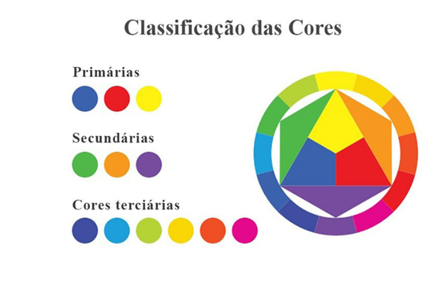
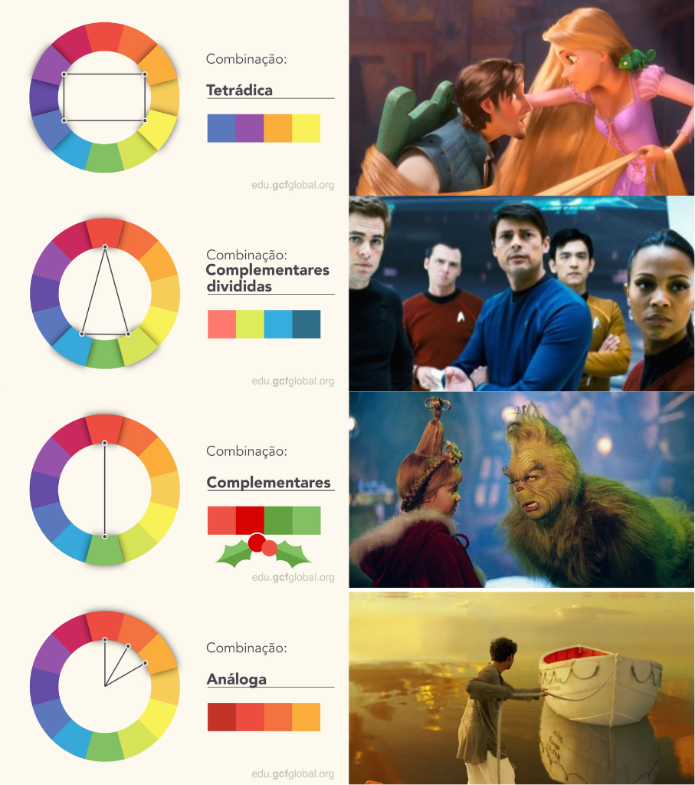

O que é colorimetria
As cores não são só estética
Têm um estudo por trás delas e normalmente não são usadas à toa, mas antes de vermos como e onde são usadas precisamos entender mais sobre elas.
As cores correspondem aos fenômenos físicos gerados pela luz
Elas são impressões visuais que os olhos absorvem quando há luz presente. Branco é a união das sete cores do espectro (amarelo, vermelho, azul, verde, laranja, azul escuro e violeta), preto é a ausência de cores ou luz, azul amarelo e vermelho são cores primárias, ou seja, a mistura de nenhuma cor pode criar elas e a misturas delas criam as outras cores e tons, laranja verde e roxo, são as cores secundárias.
As cores podem ser classificadas por diferentes grupos como: Cores Primárias- São as cores "puras", que não são obtidas da mistura de outras, e são a base para a criação de outras cores. São o vermelho, o amarelo e o azul.
As cores podem ser classificadas por diferentes grupos como: Cores Primárias- São as cores "puras", que não são obtidas da mistura de outras, e são a base para a criação de outras cores. São o vermelho, o amarelo e o azul. Cores Secundárias- São obtidas pela mistura de duas cores primárias, como o verde (azul + amarelo), o laranja (amarelo + vermelho) e o roxo (vermelho + azul). Cores Terciárias- Formadas pela mistura de uma cor primária com uma cor secundária. Exemplos: amarelo-esverdeado, azul-arroxeado, vermelho-arroxeado, etc.
Elas também podem ser divididas entre as cores quentes, frias e neutras. Onde cada uma traz uma sensação diferente e são associadas a coisas diferentes, por exemplo alguns sentimentos que cada cor se identifica, segundo Eva Heller no livro A psicologia das cores, de 2002:
- Vermelho: raiva, paixão, desejo, excitação, energia, velocidade, força, poder, calor, amor, agressividade, perigo, fogo, sangue, guerra, violência.
- Rosa: amor, inocência, saúde, feliz, contente, romântico, charmoso, divertido, suave, delicado, feminino.
- Amarelo: sabedoria, conhecimento, relaxamento, alegria, felicidade, otimismo, idealismo, imaginação, esperança, luz do sol, verão, desonestidade, covardia, traição, ciúme, cobiça, engano, doença, perigo, nostalgia.
- Laranja: humor, energia, equilíbrio, calor, entusiasmo, vibrante, expansivo, extravagante.
- Verde: cura, calmante, perseverança, tenacidade, autoconsciência, orgulho, natureza imutável, meio ambiente, saudável, boa sorte, renovação, juventude, vigor, primavera, generosidade, fertilidade, ciúme, inexperiência, inveja.
- Azul: fé, espiritualidade, contentamento, lealdade, realização, paz, tranquilidade, calma, estabilidade, harmonia, unidade, confiança, verdade, confiança, conservadorismo, segurança, limpeza, ordem, céu, água, frio, tecnologia, depressão
- Roxo/violeta: erotismo, realeza, nobreza, espiritualidade, cerimônia, misterioso, transformação, sabedoria, iluminação, crueldade, arrogância, luto, poder, sensível, intimidade.
- Marrom: materialista, sensação, terra, casa, ao ar livre, confiabilidade, conforto, resistência, estabilidade, simplicidade.
- Preto: “Não”, poder, sexualidade, sofisticação, formalidade, elegância, riqueza, mistério, medo, anonimato, infelicidade, profundidade, estilo, mal, tristeza, remorso, raiva.
- Branco: “Sim”, proteção, amor, reverência, pureza, simplicidade, limpeza, paz, humildade, precisão, inocência, juventude, nascimento, inverno, neve, bem, esterilidade, casamento (culturas ocidentais), morte (culturas orientais), frio, clínico, estéril.
- Prateado: riqueza, glamour, distinto, terreno, natural, elegante, alta tecnologia.
- Dourado: preciosidade, extravagância, caloroso, riqueza, prosperidade, grandeza.

Também temos algumas harmonias que podemos fazer que “combinam” juntas, podem ser parecidas ou opostas, algumas delas são: com cor complementar, Complementares divididas, Tetrádica, análogos, entre outros diversos.
